Aims
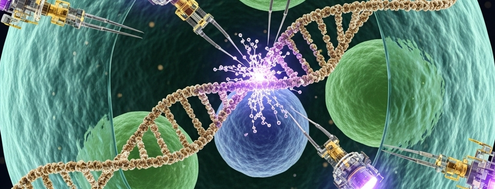
Upon completion of the course, the student will be able to acquire foundational knowledge and analytical skills. These assets will be key for the development of innovative solutions in the medical field using biomedical engineering tools. The course aims at developing the ability to critically evaluate and apply cutting-edge methodologies in design and optimization of medical technologies. It will prepare future bioengineers to face complex challenges in the sector of innovative and translational medicine.
Prerequisites: The course requires students to have basic knowledge and analytical skills that are considered necessary for a successful learning experience. Specifically, students should have already acquired:
- A solid understanding of the fundamental principles of applied mathematics, physics, and biological sciences (e.g., cell biology, physiology, biochemistry).
- Competence in basic engineering concepts and methods, relevant for quantitative analysis and problem-solving.
- The ability to critically interpret scientific data and apply quantitative reasoning to complex biological and medical problems.
These prerequisites are generally gained during a bachelor's degree in engineering, biomedical sciences, or a related scientific field.
Schedule
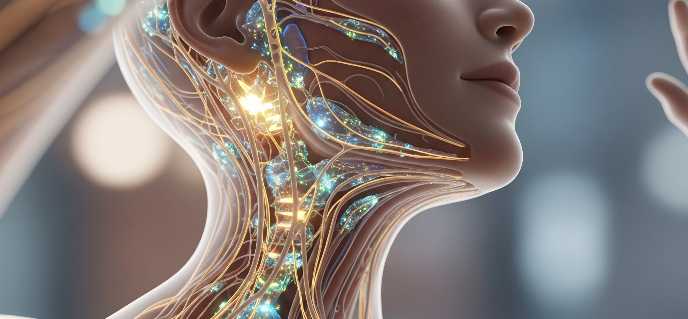
All lectures will be held on Fridays from 8:30 to 13:30. The classroom is to be announced and will be located at the Modena campus of Via Campi.
Clinical Research and Deep Brain Stimulation for Neurological Disorders
Speaker: Ing. Gaetano LEOGRANDE, Principal Research and Development Engineer, at MEDTRONIC
Date/Time: Friday, 2nd October 2026, 8:30-13:30
Location: Modena campus of Via Campi, classroom TBA - Master in Bioengineering - Colloquia in Bioengineering
CMOS-based Multielectrode Arrays for High-Resolution Electrophysiology
Speaker: Luca BERDONDINI, PhD, Senior Researcher and Principal Investigator, Fondazione Istituto Italiano di Tecnologia (IIT)
Date/Time: Friday, 9th October 2026, 8:30-13:30
Location: Modena campus of Via Campi, classroom TBA - Master in Bioengineering - Colloquia in Bioengineering
Translational Neuroengineering: the future of Neuroprosthetics for bioengineering
Speaker: Prof. Silvestro Micera, PhD, Bertarelli Foundation Chair in Translational Neuroengineering, EPFL - Swiss Federal Institute of Technology of Lausanne
Date/Time: Friday, 16th October 2026, 8:30-13:30
Location: Modena campus of Via Campi, classroom TBA - Master in Bioengineering - Colloquia in Bioengineering
Drug Delivery System for Neurological Disorders
Speaker: Audrey Franceschi Biagioni, PhD, Researcher and Entrepeneur
Date/Time: Friday, 23rd October 2026, 8:30-13:30
Location: Modena campus of Via Campi, classroom TBA - Master in Bioengineering - Colloquia in Bioengineering
Cochlear implants and Nerve Interfacing
Speaker: Enrico Donà, PhD, MED-EL Medical Electronics – Austria
Date/Time: Friday, 30th October 2026, 8:30-13:30
Location: Modena campus of Via Campi, classroom TBA - Master in Bioengineering - Colloquia in Bioengineering
From Brain Research to Clinical Applications
Speaker: Prof. Corrado Calì, PhD, Bioengineer, Researcher, and Entrepeneur, Univ. di Torino; Neuroscience Institute Cavalieri Ottolenghi (NICO); Fonds Clinatec, Grenoble, France
Date/Time: Friday, 6th November 2026, 8:30-13:30
Location: Modena campus of Via Campi, classroom TBA - Master in Bioengineering - Colloquia in Bioengineering
Biosignal monitoring and vitals tracking
Speaker: Ing. Matteo Corradini, Engineer and Entrepeneur
Date/Time: Friday, 13th November 2026, 8:30-13:30
Location: Modena campus of Via Campi, classroom TBA - Master in Bioengineering - Colloquia in Bioengineering
Medical Device Quality Management and Combination Products
Speaker: Ing. Francesco MALAVASI, Director Device Mgm Cell and Gene Therapy, Bayer S.p.A.
Date/Time: Friday, 20th November 2026, 8:30-13:30
Location: Modena campus of Via Campi, classroom TBA - Master in Bioengineering - Colloquia in Bioengineering
Retinal Prosthetics and Medical Devices
Speaker: Maura Arsiero, PhD, Bioengineer & Senior Medical Affairs Manager EMEA
Date/Time: Friday, 27th November 2026, 8:30-13:30
Location: Modena campus of Via Campi, classroom TBA - Master in Bioengineering - Colloquia in Bioengineering
Deep Brain Stimulation and Non-Invasive Neuromodulation in Clinical Neurology
Speaker: Prof. Dr. Alberto PRIORI, MD PhD, Professor of Neurology and Director of Neurology 1 Unit, University of Milan and San Paolo Hospital, Italy
Date/Time: Friday, 4th December 2026, 8:30-11:00
Location: Modena campus of Via Campi, classroom TBA - Master in Bioengineering - Colloquia in Bioengineering
From Deep Brain Dynamics to Personalized Health: Engineering Implantable Neuromodulators for Parkinson’s Disease
Speaker: Prof. Dr. Sara MARCEGLIA, MD PhD, Professor of Bioengineering and entrepeneur, University of Milan and San Paolo Hospital, Italy
Date/Time: Friday, 4th December 2026, 11:00-13:30
Location: Modena campus of Via Campi, classroom TBA - Master in Bioengineering - Colloquia in Bioengineering
In class: classes start at 8:30 (sharp) at the Modena campus of Via Campi, and continue until lunch time.
It is compulsory each of you prepares at least 3 questions for the speaker, every time. Ask your questions! Do not be shy. You have the opportunity to talk and spend formal and informal time with leaders, academic, professionals, and entrepreneurs: use this opportunity to ask about their career choices, about the academic trajectory, about what they would do if they could go back in time. The Speakers are available for the entire morning, and it is your responsibility to take as much as possible from these meetings.
content
"Colloquia in Bioengineering" course is delivered as a series of lectures followed by interactive discussions, led by prominent national and international experts from academia, industry, and clinical practice. Besides a formal talk, each session typically includes an extensive opportunity for questions and answers. This offers a comprehensive perspective on cutting-edge advancements and the translational pathway of biomedical innovation, encompassing the technical, academic, and entrepreneurial aspects of a career in Bioengineering.
I. Advanced Bio-interfaces, Diagnostics, and Sensory Restoration
This macro-topic explores the latest advancements in medical diagnostics, real-time physiological monitoring, and technologies designed to interface directly with biological systems or restore sensory functions. Specific areas and in-depth discussions by speakers will include:
-
Neuroengineering and Neuroprosthetics: Focusing on advanced interfaces and therapeutic applications.
-
Cochlear Implants and Nerve Interfacing: Technologies for auditory and neural stimulation and their clinical applications.
-
Ophthalmology, Visual Neuroscience, and Retinal Prosthetics: Exploring electro-cellular interfaces and medical technologies for vision restoration.
-
Advanced Biosensing and Monitoring Systems: Including the development and impact of continuous glucose monitoring (CGM) systems for diabetes management and innovations in biosignal and vital parameter monitoring.
II. Innovative Therapies in Bioengineering and Translational Medicine
This section examines emerging therapeutic strategies, advanced biological models for research, and the critical path of medical innovation from scientific discovery to patient care. Key discussions and guest perspectives will cover:
-
Organ-on-a-chip Technologies: Their application in disease modeling, drug discovery, and personalized medicine.
-
Therapeutic Strategies and Central Nervous System Gene Therapy: Including a practical "reality check" on the topic of "Bringing medical innovation to patients".
-
Augmented Reality for Surgery: The application of immersive technologies to enhance surgical precision and training.
III. Innovation, Entrepreneurship, and the Regulatory Landscape in Bioengineering
This macro-topic delves into the entrepreneurial ecosystem within the MedTech sector, the process of medical device development, and essential regulatory and commercialization pathways. Discussions will cover:
-
Entrepreneurship in Bioengineering: Case studies and practical insights on starting and growing companies in the biomedical field.
-
Medical Device Development and Regulatory Pathways: The life cycle of medical devices from concept to market access.
-
Bringing Medical Innovation to Patients: Industrial Perspectives: Practical challenges and strategies for clinical translation, intellectual property, and market realities.
-
Startup Innovation in Biosignal and Vital Parameter Monitoring: The entrepreneurial journey in the development and commercialization of monitoring technologies.
Evaluation Methods
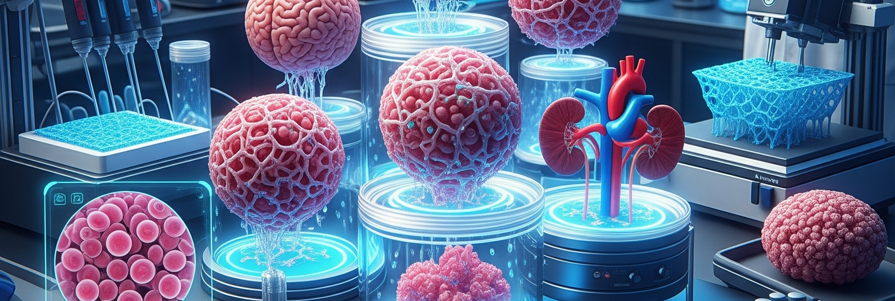
- a written test (2.5h, no books, no notes, closed-answers, exercises) — (max 30 points)
- an optional oral exam, as a 20-minute oral presentation on a topic chosen by the Lecturer and agreed in advance, on a case-by-case basis. This is necessary to achieve 30 e lode (cum laude). Warning: the oral exam is still an in depth comprehensive evaluation, where poor performance may possibly decrease the "starting" grade. The Lecturer assigns a topic and one or more scientific papers, that the student must present thoroughly as a "chalk talk" (without any Power Point slide, only on a blackboard).
Speakers
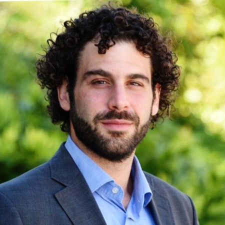
Ing. Gaetano LEOGRANDE
Principal Research and Development Engineer, at MEDTRONIC
Gaetano Leogrande is a Principal Research and Development Engineer at the Medtronic Bakken Research Center in Maastricht, The Netherlands. His work focuses heavily on the engineering and clinical translation of advanced neurostimulation technologies, particularly Deep Brain Stimulation (DBS) for the treatment of movement disorders such as Parkinson's disease. He played a fundamental role in developing the technology behind the Percept™ PC neurostimulator and the integrated BrainSense™ technology, which enables the capture of local field potentials (LFPs) directly from implanted DBS leads. His position bridges the gap between hardware engineering, clinical neuroscience, and direct support for healthcare practitioners. He actively engages with clinicians to provide training, answer technical questions, and support the clinical application of BrainSense technology, positioning him as a vital translational link between research and clinical practice.
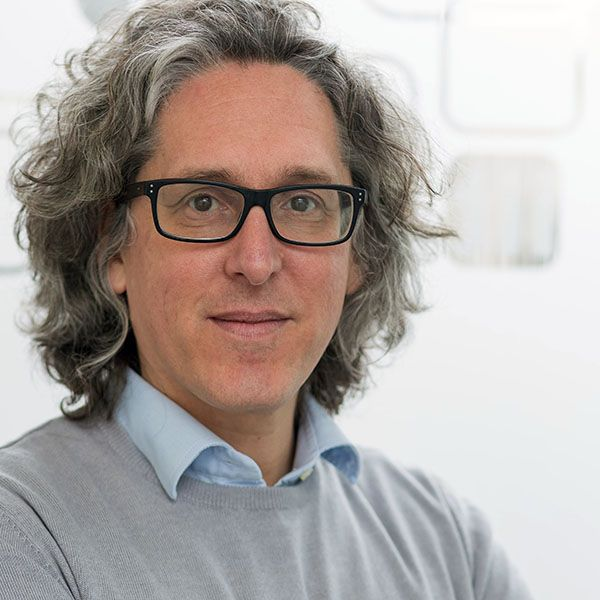
Luca BERDONDINI, PhD
Senior Researcher and Principal Investigator, Fondazione Istituto Italiano di Tecnologia (IIT)
Dr. Luca Berdondini received his M.Sc. degree in microengineering in 1999 from the Swiss Federal Institute of Technology of Lausanne (EPFL). In 2003, he completed his PhD on nano-/micro-fabricated interfaces and CMOS devices for electrophysiology at EPFL. He directs the Microtechnology for Neuroelectronics research unit at the Italian Institute of Technology (IIT) Foundation in Genoa. His group develops innovative neuroelectronic devices for high-resolution neural interfaces, combining expertise in microengineering, electronics, computational science, and neuroscience. These technologies are used in advanced neuroscience research and open up new perspectives for the study of the nervous system, clinical applications, and brain-machine interfaces. He is widely recognized among the pioneers of CMOS-based multielectrode arrays for electrophysiology and co-founded two start-ups, 3Brain AG and Corticale Srl.
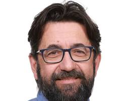
Prof. Silvestro Micera, PhD
Bertarelli Foundation Chair in Translational Neuroengineering, EPFL
Silvestro Micera received the University degree (Laurea) in Electrical Engineering from the University of Pisa, in 1996, and the Ph.D. degree in Biomedical Engineering from the Scuola Superiore Sant'Anna, in 2000. From 2000 to 2009, he has been an Assistant Professor of BioRobotics at the Scuola Superiore Sant’Anna where he is now the Head of the Neural Engineering group. In 2007 he was a Visiting Scientist at the Massachusetts Institute of Technology, Cambridge, USA with a Fulbright Scholarship. From 2008 to 2011 he was the Head of the Neuroprosthesis Control group at the Institute for Automation, Swiss Federal Institute of Technology, Zurich, CH. He was the recipient of the Early Career Achievement Award and of the Technical Achievement Award of the IEEE Engineering in Medicine and Biology Society in 2009 and 2021, respectively. From 2011 to 2018 he was Associate Professor and Head of the Translational Neural Engineering Laboratory at the Swiss Federal Institute of Technology Lausanne (EPFL), CH. He is the author of several scientific papers and international patents. He served as Guest Editor of several biomedical engineering journals.
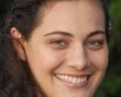
Audrey Franceschi Biagioni, PhD
Researcher and Entrepeneur
Dr. Franceschi Biagioni graduated in Pharmacy from the Methodist University of Piracicaba, Brazil in 2006. She completed her Masters (2010) and Doctorate (2014) and Post-Doctoral (2014-2015) training in Biological Sciences, concentration area: Pharmacology at Medicine School of Ribeirão Preto-USP. She performed a Postdoctoral Internship (2016) in Psychiatry at the Institute of Psychiatry (IPUB) of the University of Rio de Janeiro (UFR). Following that, she was awarded, in 2017, with the Research Internships Abroad (BEPE) - FAPESP fellowship to conduct a Postdoctoral Internship in the Department of Neurobiology at SISSA – Trieste, Italy. She became a Senior Postdoctoral Fellow at the Department of Neurobiology at the SISSA - Trieste-Italy, awarded with the Horizon 2020 - Graphene Core2 and Core3 flagship fellowship (2018-2022). She is currently holding a Senior postdoctoral position at the Department of Neurobiology at the SISSA - Trieste-Italy, awarded by FSE-SISSA (2022). Her work focuses on developing innovative drug delivery technologies at the interface of pharmacology, neuroscience, nanomaterials, and bioengineering. I am particularly interested in translating academic research into practical healthcare solutions, with an emphasis on smart and controlled drug delivery systems that improve medication administration and patient outcomes. As CEO and Co-Founder of SINDREL MedTech, I am focused in the development of a graphene-based platform for digital drug release, aiming to empower patients to improve their health and quality of life through personalized and accessible therapeutic technologies.
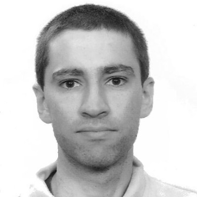
Enrico Donà, PhD
MED-EL Medical Electronics – Austria
Enrico Donà is a Senior Development Engineer at MED-EL and primarily involved in the electronics development for Class-III implantable medical devices, specifically cochlear implants. His responsibilities also include coordinating component manufacturing with external suppliers, procuring high-reliability components, developing and assessing reliability test methods for electronic and mechanical assemblies, and embedded software testing. Beyond his core development work, Mr. Donà has also shared his expertise as a Lecturer at MCI | The Entrepreneurial School® from 2022 to 2024, where he taught the “RF Technology” course within the Mechatronics master’s program. Earlier in his career, he worked as an R&D Engineer at D. Swarovski KG from 2009 to 2011, focusing on the development and testing of thin-film PVD coatings. Before that, he was a Reliability Engineer at Infineon Technologies Austria from 2007 to 2009, where he assessed reliability for SFET and SMART technologies and successfully implemented programs for reducing in-field failures. His professional journey began as a Technical Support Specialist at Techne Security Srl in Modena, Italy, in 2003. Enrico Donà holds a PhD in Physics from Universität Innsbruck (2004-2007), where his doctoral research involved investigating surface phase transitions using Scanning Tunneling Microscopy and UV-Photoemission. He also earned an MSc in Physics from Forschungszentrum Jülich in 2002, with his thesis focusing on the growth and characterization of AlGaN/GaN heterostructures.
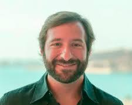
Prof. Corrado Calì, PhD
Bioengineer, Researcher, and Entrepeneur, Univ. di Torino
Corrado Calì is Associate Professor of Human Anatomy at the Department of Neuroscience at the University of Turin. He graduated in biomedical engineering from the Polytechnic University of Turin (2006) and developed a passion for neuroscience during his thesis in Henry Markram's laboratory at EPFL in Lausanne. He earned his doctorate at the University of Lausanne, studying the modulation of synaptic activity by astrocytes. He then specialized in 3D electron microscopy techniques in Graham Knott's laboratory at EPFL. In 2013, he joined Pierre Magistretti's team at KAUST (Saudi Arabia), combining electron microscopy, 3D reconstruction, and virtual reality to study astrocyte morphology and brain metabolism. Since 2020, he has been a researcher at NICO in Orbassano. In 2021, he founded INTRAVIDES, a startup dedicated to mixed reality for surgery. Since 2025, he has been Scientific Director of the Fonds Clinatec (Grenoble). He has over 60 international publications.
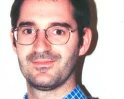
Ing. Matteo Corradini
Engineer and Entrepeneur
Ing. Matteo Corradini is the Founder of Vital Signals in a Touchs, a company focused on developing innovative solutions for monitoring vital signs, founded as a spin-off from the University of Modena and Reggio Emilia in 2017. VST srl developed Ippocratech®Care, a unique non-invasive solution that monitors five crucial vital parameters—heart rate, respiratory rate, body temperature, blood pressure, and blood oxygenation—and includes a single-trace ECG. His work in VST srl recently achieved a significant milestone with a 3 million Euro investment from Fondazione ENEA Tech e Biomedical. Matteo Corradini is also associated with the University of Modena and Reggio Emilia.
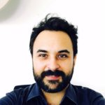
Ing. Francesco MALAVASI
Director Device Mgm Cell and Gene Therapy, Bayer S.p.A.
Dr. Francesco Malavasi brings over 10 years of medical device and combination products industry experience and knowledge across various business areas for development and commercialization. He is the Director Device Mgm Cell and Gene Therapy at Bayer, and his role centers on serving as a medical device quality risk manager covering product, process, and risk-related activities specifically for combination products and medical devices.
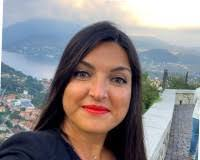
Maura Arsiero, PhD
Bioengineer & Senior Medical Affairs Manager EMEA
Maura Arsiero is a bioengineer and electrophysiologist with a distinguished career spanning academia and the medical device industry, with a strong focus on surgical and ophthalmic technologies. She holds a Master in Biomedical Engineering from the Univ. of Genoa, followed by a PhD in Neuroscience and a postdoctoral fellowship at the Univ. of Bern, Switzerland. She further strengthened her strategic capabilities with a Master in Management, Technology and Entrepreneurship from EPFL (École Polytechnique Fédérale de Lausanne), where she has also contributed as lecturer in Life Sciences and neuroprosthetics. Over more than 18 years in the medical device sector, Maura has built a unique expertise at the intersection of clinical science, medical innovation, and market development. During her 12-year tenure at Second Sight Medical Products, she held roles of increasing seniority across Medical Affairs, clinical operations, and commercial leadership, ultimately serving as International Director of Field Operations and Business Development across EMEA and APAC. She played a pivotal role in enabling the first commercial implantation of a retinal prosthesis globally, successfully integrating clinical, surgical, and healthcare system requirements. She later served as Director of Global Market Development at Samsara Vision, before joining Bausch + Lomb as Senior Marketing Manager, Surgical. Maura currently holds the position of Senior Medical Affairs Manager, EMEA at Bausch + Lomb. In this role, she leads Medical Affairs activities across the region, strengthening the company’s commitment to scientific engagement, clinical excellence, and innovation.
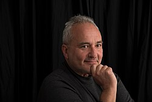
Prof. Dr. Alberto PRIORI, MD PhD
Professor of Neurology and Director of Neurology 1 Unit, University of Milan and San Paolo Hospital, Italy
Dr. Alberto Priori earned his Degree in Medicine and Surgery in 1987, his specialization in Neurology in 1991, and a Doctoral degree in 1995 at the University of Rome "La Sapienza". He serves as a Professor of Neurology at the University of Milan, the Director of the Neurology 1 Unit at San Paolo Hospital, and the Founder and Coordinator of the Aldo Ravelli Center for Neurotechnology and Experimental Neurotherapeutics. Professor Priori is internationally recognized for his wide-ranging research on the pathophysiological mechanisms underlying diseases of the brain and peripheral nervous system. He has pioneered the implementation of several neuromodulation techniques and developed innovative technologies for treating neuropsychiatric disorders. In 2008, he founded Newronika SpA, a spin-off company of the University of Milan dedicated to developing neurotechnological devices. His research spans clinical and experimental neurosciences, focusing significantly on movement disorders, brain stimulation, and neuroimaging.
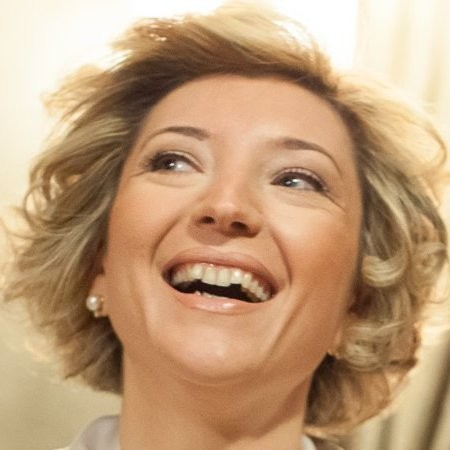
Prof. Dr. Sara MARCEGLIA, MD PhD
Professor of Bioengineering and entrepeneur, University of Milan and San Paolo Hospital, Italy
Dr. Sara Marceglia is Professor of Bioengineering at the University of Milan. Her research interest are in two main areas, one related to the optimization of invasive and non-invasive neuromodulation devices through the analysis of deep EEG signals recorded in patients with movement disorders, and the other one related to Personalized e-health, integrated healthcare through ICT solutions, and decision support systems, also using cognitive computing technologies such as IBM Watson. She got her PhD in Bioengineering summa cum laude in April 2009 and her Master degree summa cum laude in Biomedical Engineering in December 2004. She is author of more than 70 papers in peer-reviewed international journals, and of two European/US patents on non-invasive neuromodulation through direct current stimulation. She is also founder of Newronika srl, spin-off company of the Fondazione IRCCS Ca’Granda Ospedale Maggiore Policlinico and of the University of Milan.
Past Speakers
Prof. Corrado Cali, PhD
University of Turin and IntraVides, Italy
He trained as an electronic engineer at Politecnico di Torino before working in computational neuroscience at EPFL. He earned a doctoral degree in 2012, with a focus on brain physiology and astroglia cells. After a postdoctoral fellowship, he joined the University of Turin in 2020. In 2021, he founded IntraVides, a startup that develops augmented and virtual reality tools for clinical applications.
Prof. Silvestro Micera, PhD
EPFL - Swiss Federal Institute of Technology of Lausanne
He received a university degree in Electrical Engineering in 1996 and a PhD in Biomedical Engineering in 2000. He was a visiting scientist at the Massachusetts Institute of Technology with a Fulbright Scholarship. From 2008 to 2011, he was the head of the Neuroprosthesis Control group at the Swiss Federal Institute of Technology in Zurich. He has received two awards from the IEEE Engineering in Medicine and Biology Society .
Audrey Franceschi Biagioni, PhD
International School of Advanced Studies - SISSA
She graduated in Pharmacy in 2006 and holds a Doctorate and Master's in Biological Sciences, with a concentration in Pharmacology. She completed postdoctoral training in Psychiatry and Neurobiology, including an internship at SISSA. She currently holds a senior postdoctoral position at SISSA, focusing on neuroscience and nanoscience, and is developing new technologies for drug delivery to treat long-term conditions.
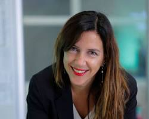
Silvia Scaglione, PhD
Consiglio Nazionale delle Ricerche & React4life, Italy
She earned a PhD in Bioengineering from the University of Genoa in 2005. She is the head of the Laboratory of Tissue Engineering and has been the principal investigator of a FET-OPEN H2020 project. She is the inventor of seven patents and a senior researcher at the Consiglio Nazionale delle Ricerche (CNR).
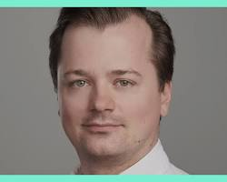
Bálint Várkuti, PhD
CEO of Ceregate, Germany
He is the co-founder and CEO of CereGate GmbH, a neurotechnology company developing neural interfaces. Under his leadership, CereGate's Deep Brain Stimulation therapy received FDA Breakthrough Designation. He previously served as the Global Director of Functional and Stereotactic Neurosurgery at Brainlab. He earned a PhD in Neuroscience from the Max Planck Graduate School and a Diploma in Psychology from the Albert-Ludwigs-University in Freiburg.
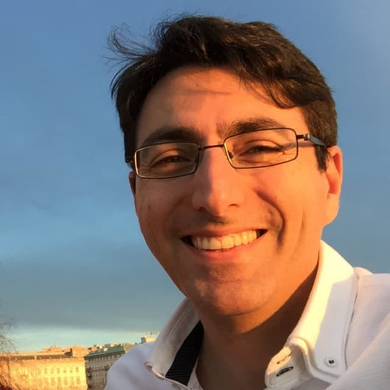
Prof. Ing. Michele Giugliano, PhD
Professor of Bioengineering and of Physiology
Michele Giugliano is a Professor of Bioengineering at the University of Modena and Reggio Emilia and a Professor of Physiology at SISSA in Trieste. With over twenty years of research experience, he specializes in the biophysics and electrical properties of brain cells. Before returning to Italy in 2019, he held professorial and research positions in Switzerland and Belgium. He has coordinated international research projects funded by the European Commission and is an author of numerous scientific studies.
Enrico Donà, PhD
MED-EL Medical Electronics - Austria
He is a Senior Development Engineer at MED-EL, where he is involved in the electronics development for cochlear implants. He has also lectured on "RF Technology" at MCI | The Entrepreneurial School®. His experience includes roles as a Reliability Engineer at Infineon Technologies and an R&D Engineer at D. Swarovski. He holds a PhD in Physics from Universität Innsbruck.
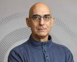
Prof. Yossi Mandel, PhD
Professor at Bar-Ilan University
He is an ophthalmologist and eye surgeon with a PhD in Bioengineering. He is the head of the Ophthalmic Science and Engineering Lab and the School of Optometry and Vision Science at Bar-Ilan University. His research focuses on ophthalmic engineering, including retinal prostheses and microfluidics implants, and he received an ERC grant for his work on a hybrid retinal implant.
Ing. Matteo Corradini
Engineer and Entrepreneur
He is the founder of Vital Signals in a Touch (VST srl), a spin-off from the University of Modena and Reggio Emilia. His company developed `Ippocratech®Care`, a non-invasive solution for monitoring five vital parameters: heart rate, respiratory rate, body temperature, blood pressure, and blood oxygenation. The company recently received a significant investment of 3 million Euros.
Maura Arsiero, PhD
Bioengineer and Frontiers Medical Device Expert
She holds a PhD in Neuroscience from the University of Bern and a Master's in biomedical engineering from the University of Genoa. Her career has a significant emphasis on surgical and ophthalmic products within the medical device sector. She is currently the Head of Marketing, Surgical, at Bausch + Lomb Italia, and has held several key positions at BVI Medical and Second Sight Medical Products.
Hands-On Sessions
A key component of the Colloquia is a series of interactive, hands-on sessions designed to stimulate curiosity, offer an opportunity for practical experience, and foster collaborative problem-solving. Following the formal talk, the course coordinator with the help of the guest speaker will guide students through a small practical exercise, allowing them to apply the concepts discussed in the lecture to real-world scenarios. This segment is structured to encourage active participation and direct engagement with leading experts from academia, industry, and clinical practice. Students should carry in class their own laptop/tablet device. Before each class, each student must individually prepare and formulate at least 3 questions on the topic of the day, to be asked during the Q and A sesssion.
Typical Daily Schedule
Each session follows a similar structure to maximize learning and interaction:
- 9:00 AM - 9:05 AM: Introduction. The course coordinator will briefly introduce the speaker and their area of expertise.
- 9:05 AM - 10:15 AM: Formal Talk. A ~70-minute presentation where the speaker will delve into their current research, entrepreneurial activities, or primary area of expertise.
- 10:15 AM - 10:30 AM: Question & Answer Session. A dedicated time for students to ask questions related to the formal talk. Students are encouraged to prepare questions beforehand to "break the ice".
- 10:30 AM - 10:45 AM: Short Break. A brief 15-minute break for refreshments and informal networking.
- 10:45 AM - 11:10 AM: Career Trajectory Discussion. A ~25-minute informal segment where the guest shares their personal and professional journey, offering insights into key decisions, challenges, and milestones.
Following this, the session transitions to the hands-on component:
- 11:10 AM - 12:35 PM: Interactive Hands-on Session. Students will form small groups (8-10 people/group) to collaboratively brainstorm and work on a practical problem, case study, or dataset provided by the speaker. The speaker will remain available to interact with the students, offering guidance and insights. Groups will be shuffled every week, offering every time the opportunity to meet and collaborate with other students (even with different style of interaction, level or proficiency, communication skills).
- 12:35 PM - 1:30 PM: Group Presentations & Wrap-up. Each group will present a brief summary of their findings, design, (or failure) followed by a concluding remark and brief discussion with the guest.
Presentation Slides: A copy of the slides for the formal talk (in PDF or PowerPoint format) will be made available to the students.
Hands-on Session Materials: A task for students to work on will be also made available, such as:
- A simplified dataset for analysis.
- A case study or specific design problem.
- A Jupyter notebook with starter code for a computational task.
- A set of key conceptual questions requiring students to apply knowledge from the talk.
The chosen activity will be designed to be manageable for small groups of students to complete on their laptops within the allotted 80-85 minutes. Hands-on activity are an exploratory initiative and require a serious commitment by each participant to turn time into an opportunity to grow and learn both hard and soft skills.